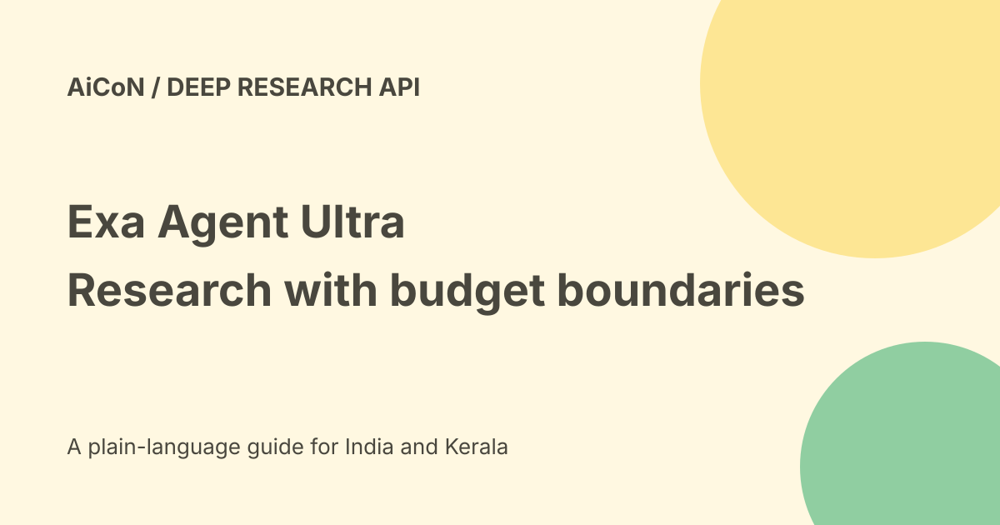

Exa Agent Ultra: research lists, spending caps and credit caveats
Exa Agent Ultra is the highest-effort mode of Exa Agent. It is designed for large research lists and difficult criteria, not just a quick summary. Current Ultra documentation sets a default twenty-dollar spending cap per run, with optional cost and duration controls. A free credit balance is not unlimited free Ultra research.

What Ultra is for
Exa describes splitting research into parallel subtasks and using several models and sources. Example tasks include a market map of qualifying companies or a list of papers with evidence for specific criteria.
Define the criteria before running: geography, date, entity type, required evidence and fields to return. A longer list can still contain duplicates or weakly supported entries.
More effort takes more time
The current docs say complex tasks typically take about thirty minutes and challenging runs can take up to three hours. This is a vendor description, not a guaranteed delivery time.
The documented SDK polling helpers default to a shorter one-hour timeout. A client timeout is not proof that a remote run has stopped or that no usage is billed.
How the documented API works
The official example creates an Agent run with effort set to ultra, then polls for completion. Output schemas, input data and streaming are supported as part of the run flow.
Read the current documentation for your SDK and API route. Do not mix old beta mode names with a new request blindly: the pricing landing page still uses beta max wording where newer docs say ultra.
Set a real spending limit
The Ultra docs allow maxCostDollars between one and one hundred dollars, with a twenty-dollar default. They allow optional maxDurationSeconds from three hundred to 10,800 seconds, or five minutes to three hours.
The time limit has no default in the budget table. Near a limit, the run stops starting new work and returns what it found. A cap is a control on a run, not a guarantee that every requested row will be found.
Stopping does not erase costs
Ultra can be stopped early and keeps the findings already produced. The docs say usage up to the stop is still billed.
Inspect the final stop reason. Budget reached, time limit reached or stopped can return useful partial results; they are different from a complete search of the intended scope.
Current usage pricing
The checked pricing docs list Agent Compute Units, searches and optional contact enrichment as separate usage components. Provider calls through Exa Connect can add further charges.
The twenty-dollar default cap is roughly₹1,927 at Wise's checked₹96.35 per dollar, before tax, fees or currency spread. It is not a flat twenty-dollar fee: shorter runs can cost less.
The one-to-one-hundred-dollar cost-control range is approximately₹96 to₹9,635 at that rate. Confirm the account's current billing terms and balance before submitting a run.
Free-credit wording is inconsistent
The pricing landing page says new accounts receive twenty dollars in credits and ten dollars monthly. The newer admin pricing document describes a ten-dollar starting balance, resetting to ten dollars on the first of each month, plus a one-time ten-dollar bonus after onboarding the first team.
Those are not identical descriptions. Check the actual dashboard and current grant terms. Do not promise twenty dollars plus another ten dollars immediately, automatic rollover or unlimited Ultra access.
A safe evaluation sequence
- Write the exact inclusion and exclusion rules.
- Choose a small public-data test with known examples.
- Set an approved cost cap and a time limit.
- Use the current Ultra request schema.
- Keep the run identifier and monitor its state.
- Inspect the stop reason, billed usage and missing fields.
- Open evidence sources for a sample of returned rows.
- Check duplicates, outdated facts and false exclusions.
- Expand only after reviewing quality and cost.
No API key, paid run, credit purchase or dataset was created here.
Benchmark boundaries
The launch compares Ultra with other research systems using WANDR and other tasks. Exa says some comparison figures were published by others and some runs were made by Exa.
This is the vendor's evaluation, not a universal independent ranking. Reported cost savings depend on the task, settings, grader and definition of a passing entity. A benchmark does not prove every due-diligence conclusion is correct.
India and private information
No Indian processing region, tax-inclusive local tariff or Malayalam performance was verified. Public-web research can still involve personal information and source restrictions.
Do not upload confidential files or build a contact list without an approved purpose and audience. A source citation does not itself authorise onward disclosure.
What changed since the original post?
We consolidate repeated Ultra posts, add documented budgets and stop semantics, preserve the signup-credit conflict and distinguish a partial result from exhaustive completion.
Frequently asked questions
Is Ultra unlimited free research?
No. It uses metered credits.
Does stopping refund earlier usage?
The docs say usage up to the stop is billed.
Does a returned list prove completeness?
No. Check scope, evidence and stop reason.
Sources: Official Ultra announcement · Current Ultra controls · Current admin pricing · Pricing landing page for wording comparison · Approximate USD conversion. Checked 7 October 2026.